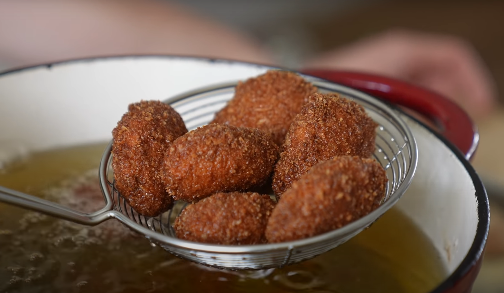

Wendy's Spicy Chicken Nuggets

Description
Homemade version of Wendy's spicy chicken nuggets created by Joshua Weissman
Ingredients:
Ground Chicken:
- 4 chicken breasts
- 1/2 cup finely chopped chicken skins
- 1.25 tablespoons kosher salt - 11g
- 2 teaspooons sugar - 9g
- 1 teaspoon MSG - 5g
- 1 teaspoon white pepper - 3g
- 1 teaspoon garlic powder - 5g
Flour Dredge:
- 1.5 cups all purpose flour - 225g
- 1 tablespoon kosher salt - 4g
- 1 teaspoon MSG - 5g
- 1 teaspoon sugar - 4g
- 1 tablespoon sweet paprika - 4g
- 1.5 teaspoons cayenne - 5g
Dip and panko:
- 2 whole eggs
- 1/4 cup buttermilk -54g
- 1.5 tablespoons smoked paprika - 10g
- 2 teaspoons cayenne powder - 6g
- 2 teaspoons fresh cracked black pepper - 10g
- 2 teaspoons MSG - 10g
- 1 tablespoons kosher salt - 10g
- 1 teaspoon sugars - 5G
- 2 teaspoons garlic powder - 8g
- 1 teaspoon onion powder -4g
- 2 cups kikkoman panko breadcrumbs -138g
Spicy Garlic Aioli:
- 3 tablespoons spicy chili crisp
- 2 tablespoons rice vinegar
- 1 tablespoon miso -20g
- 2/3 cup mayo - 121g
- 2 teaspoons cayenne - 6g
- 2 teaspoons sweet paprika - 6g
- 2 teaspoons honey - 20g
- 3 cloves finely chopped garlic - 14g
- Salt to taste
Instructions:
Chicken Method:
- To a large bowl, add sliced chicken along with chopped chicken skin. Add granulated sugar, kosher salt, MSG, ground white pepper, garlic powder, and mix together.
- Run through a meat grinder.
- Shape chicken into nuggets and place onto a parchment-lined and greased baking sheet.
- Cover with plastic wrap and place in the freezer for 30 minutes.
- For the flour dredge, combine all-purpose flour, sugar, kosher salt, sweet paprika, cayenne, and MSG. Mix together.
- For the dip, crack in 3 whole eggs along with fresh cracked black pepper, msg, garlic powder, onion powder, kosher salt, cayenne powder, smoked paprika, granulated sugar, and whisk together completely before whisking in buttermilk.
- For the third bowl, fill with panko bread crumbs.
- Heat a heavy bottom pot filled with vegetable oil to 350F.
- Toss nuggets in the flour mixture followed by the dip and finally into the panko bread crumbs.
- Place nuggets on a baking sheet lightly dusted with panko and repeat with the remaining pieces of chicken.
- Fry in batches for 3-5 minutes. Drain on a wire rack set in a rimmed baking sheet.
Spicy Chicken Sauce Method:
- To a blender, add spicy chili crisp, garlic cloves, rice vinegar, and blend on high speed until smooth.
- To a small bowl, add mayonnaise and spicy chili crisp mixture, honey, cayenne powder, smoked paprika, salt to taste, and whisk together.